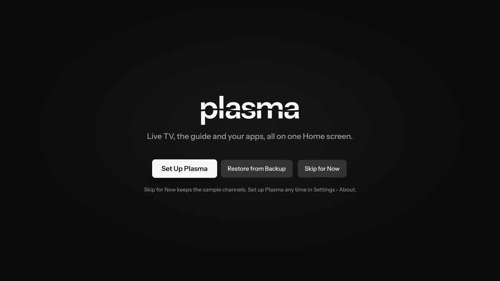
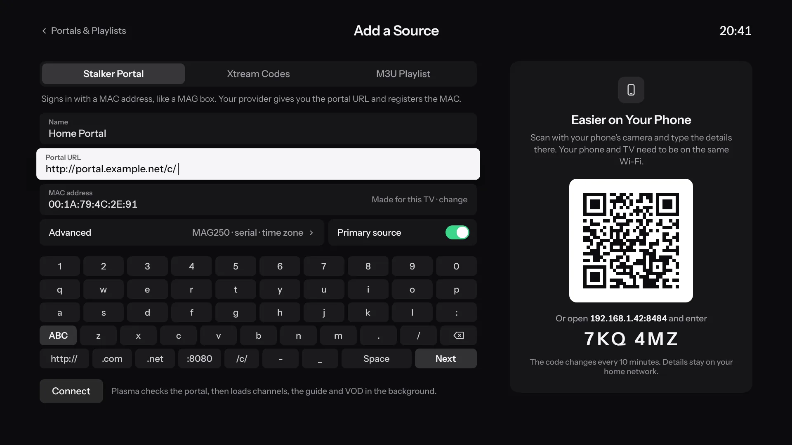
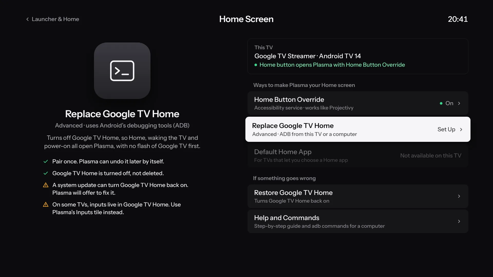

Install Plasma.
Plasma isn’t on Google Play. You install it once from GitHub, and after that it updates itself.
A TV that runs Android
Android TV or Google TV 8.0 or later, or a Fire TV with Fire OS 7 or later.
Your service’s details
An Xtream Codes login, a Stalker portal, or an M3U playlist with its XMLTV guide.
A computer, the first time
On the same network, with Android’s platform tools (adb). A downloader app on the TV works too.
1Choose your file
There’s no stable release yet. Each test build of Plasma Dev on the Releases page comes as three files:
app-armeabi-v7a-dev.apk
64-bit Android TVFor TVs and boxes that run 64-bit Android.
app-arm64-v8a-dev.apk
Not sure which?The universal file works on both, and is bigger.
app-universal-dev.apk
Plasma Dev and Plasma, the first release when it comes, are signed with different keys and install side by side.
2Install it from a computer
- On the TV, open Settings › System › About and press OK on Android TV OS build seven times. On older Android TV it’s Settings › Device Preferences › About › Build.
- In the Developer options that appear, turn on Network debugging, or Wireless debugging on newer TVs.
- From a computer on the same network, with Network debugging:
adb connect <tv-ip>:5555 adb install -r app-armeabi-v7a-dev.apk
Or with Wireless debugging, pairing once with the code and ports the TV shows:
adb pair <tv-ip>:<pairing-port> <code> adb connect <tv-ip>:<port> adb install -r app-armeabi-v7a-dev.apk
- If the TV asks whether to allow debugging from this computer, choose Allow.
No computer? A downloader app on the TV, or a USB stick and a file manager, works too. Android may then gray out the Accessibility switch Plasma uses for the Home button; step 6 has the fix.
3On a Fire TV
Plasma runs as an app on Fire TV devices with Fire OS 7 or later, such as the Fire TV Stick 4K Max, the Fire TV Cube and Fire TV televisions. Turn on ADB debugging in Settings › My Fire TV › Developer Options, then install the same way. If Developer Options isn’t there, select the device’s name in Settings › My Fire TV › About seven times.
- Fire OS keeps Amazon’s home screen, so Plasma opens from your apps, and its Home Screen settings don’t apply.
- Fire TV devices with Vega OS, such as the Fire TV Stick 4K Select, can’t install Android apps.
- Plasma hasn’t been tested on a Fire TV yet.
4First start
Until you add a source, Plasma shows made-up sample channels so you can look around. Set Up Plasma walks you through your service, the look, profiles and your home screen, and Restore from Backup brings everything over from another TV.

5Add your service
Open Settings › Portals & Playlists › Add Portal or Playlist, and choose Stalker Portal, Xtream Codes or M3U Playlist. Typing on a TV is slow, so scan the code on that screen with your phone’s camera and type the details there. Your phone and TV need to be on the same Wi-Fi.

For a Stalker portal, Plasma makes a MAC address for the TV, or you can type the one your provider registered. Plasma checks the source, then loads the channels, the guide, movies and series in the background.
6Make it your home screen
Open Settings › Launcher & Home › Home Screen. Plasma shows which ways work on this TV, and Help and Commands there has the exact steps and adb commands for it.

- Home Button Override
- An Accessibility service. Plasma opens whenever Home is pressed, though Google TV’s own home screen can show for a moment first.
- Replace Google TV Home
- Turns Google TV Home off, so Home, waking the TV and turning it on all open Plasma, with no flash of Google TV first. Plasma pairs with the TV once, from your phone, and can undo it later by itself.
- Default Home App
- On TVs whose settings offer a choice of Home app, choose Plasma there.
Accessibility switch grayed out? Android 13 and later does that for apps installed from a file manager or a browser. Open Plasma’s App info and choose ⋮ › Allow restricted settings, if your TV has it, or use Turn On over Wireless Debugging in Plasma’s Home Button Override sheet.
7Updates
There’s nothing more to install by hand. Plasma checks GitHub for new builds and installs them after asking, from Settings › About › Plasma Update.
8If something’s wrong
- To get Google TV Home back
- Choose Restore Google TV Home in Settings › Launcher & Home › Home Screen. Plasma turned it off rather than deleting it, so it comes straight back.
- If a system update turned Google TV Home back on
- Plasma notices and offers to fix it.
- To report a problem
- Open an issue on GitHub. Leave your server’s address, your provider and your logins out of it.